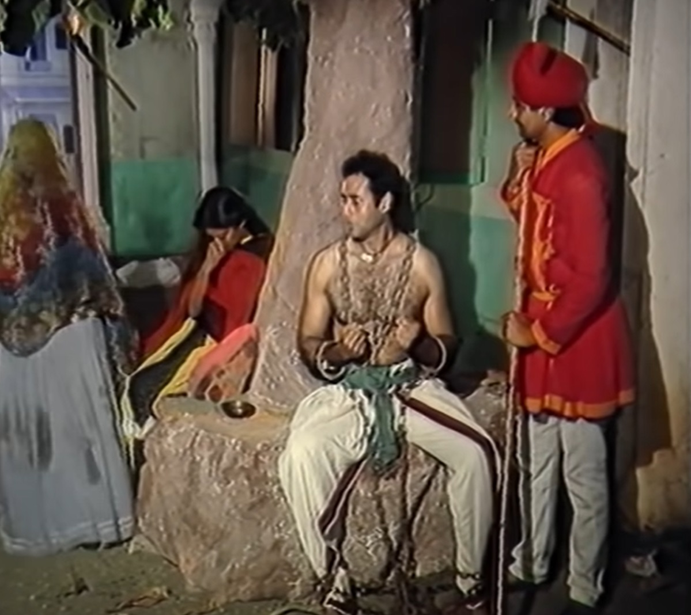
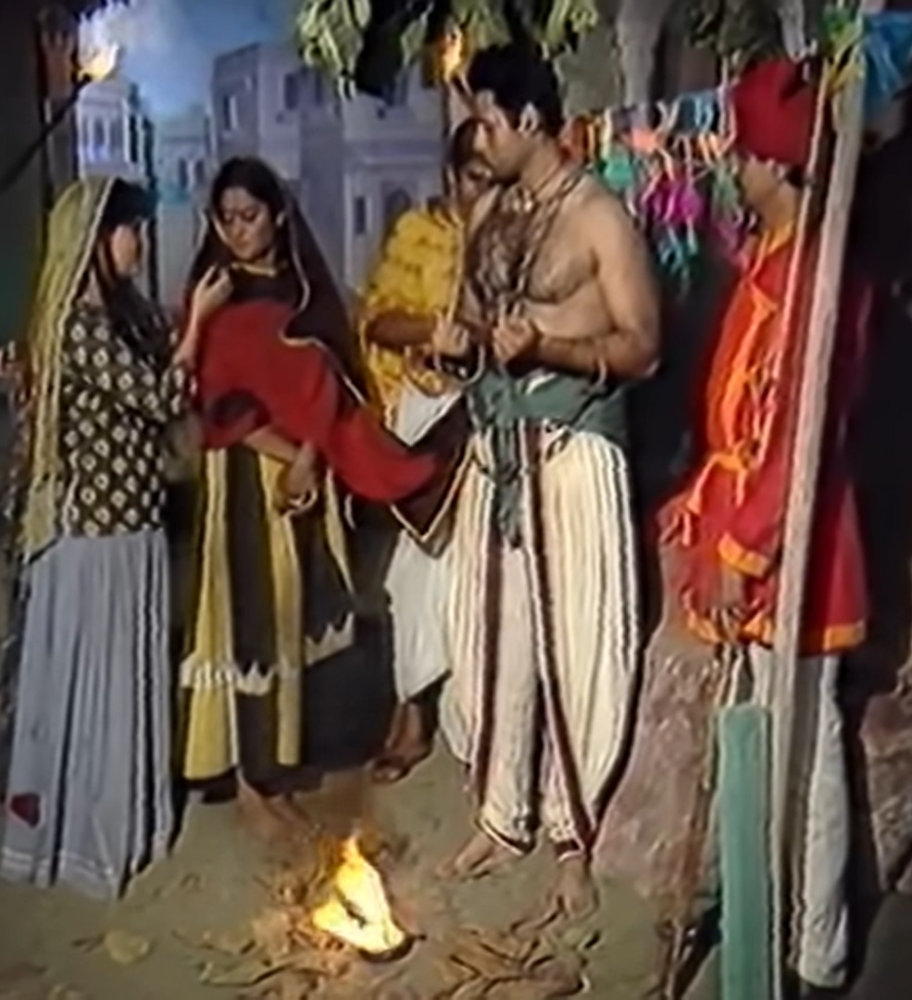

|  | Vikram catches Betal again and takes him away. Betal again gives him a Hears the story in which a widow woman Bhagwati and her daughter share their misfortune Due to this she was wandering from one city to another. Both mother and daughter in one city When it stops at night, a policeman catches a thief and returns in the morning. Was waiting for him so that he could present him before the king. both mother and daughter When she goes to a policeman and asks him for water to drink, the policeman Asks him to take water from a pot. That thief also drank from Bhagwati Asks to drink. Bhagwati brings water and makes her daughter drink it. When Dhanwati gives water to the thief, the thief says to Bhagwati that your daughter Bhagwati threatens her if she is a virgin and marries me. of the King The policeman tells the thief that he is going to be hanged tomorrow and he needs to get married. Then the thief says that he wants to marry her so that she can Before killing someone, there should be someone to give him water so that he can get salvation. The policeman silences him and goes to drink water. The thief As soon as the soldier leaves, he asks Bhagwati to get her daughter married to him. If he gives, he will tell him the address of all his property and hidden money and he Will be able to spend her whole life with flames. Bhagwati says I will follow your advice. If I agree then our luck will improve but what is the benefit to you in this? So he says that if I become the husband of Dhanwati, then the one who is my son will After killing me, he will donate my body so that I can become a ghost. I will avoid going. Bhagwati agrees to his request. that thief is a soldier On arrival he gives him two gold pieces and tells him that in the house opposite If the Pandit wants to bring her a bull and get her married to Dhanvati, then the soldier Accepts what they say. The Pandit comes and gets them married. thief rich Ko tells Ko the address of the treasure and the next morning the thief is hanged. She goes. Bhagwati and Dhanmati find all the money and live a rich life. Looks like. As time passes, Bhagwati searches for a match for her daughter's marriage. Bhagwati wanted to keep her daughter and her husband with her. One to Bhagwati If she finds a boy, she gets both of them married. but that boy On the very first night after marriage, he steals all the money and their wealth and runs away. Both mother and daughter feel sad and remember that a thief had Had settled and someone else looted it. Due to this shock, Bhanmati is unable to show pride and dies. She goes. One day he was wandering in a city when he saw a prince. Who was caught by a python, Dhanmati's son tries to save him. But the prince is unable to save him. If the king comes there and sees this apple The king takes the mother and son with him to the palace and meets Dhanmati. Adopts the son. Dhanmati's son is given education and Is made a prince. After some time the king's health deteriorates So the king calls Dhanmati's son and tells him that after me you will You will have to become the king of this kingdom and protect it; doing this the king would die. Is. Dhanmati's son becomes king. Dhanmati tells her son that You have to donate your father's body so that he can rest in peace. Dhanmati and her son go to donate Pind. Now from Betal Vikram Asks, now tell me who is the father of that boy and whose son he is. Will donate. Vikram tells Betal that the boy's real father is a thief. Who has legally married Dhanvati. Because that young man asked Dhanwati The marriage was done out of greed and the king has fulfilled his duty hence Dhanvati's son will consider the thief as his father and will perform his Pind Daan. King Hearing Vikram's answer, Betal flies again and returns to its tree. Goes and hangs himself. |  |